Welcome to the Exhibition
Select a movement or era from the dropdown menu to explore related artworks.
The Nineteenth Century
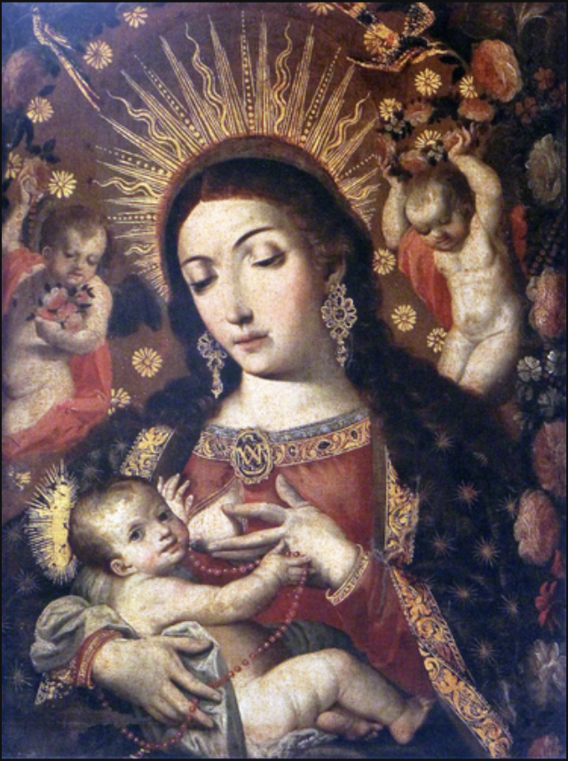
Caption: Holguin, Virgen de la Leche (Virgin of the Milk), 1710-20
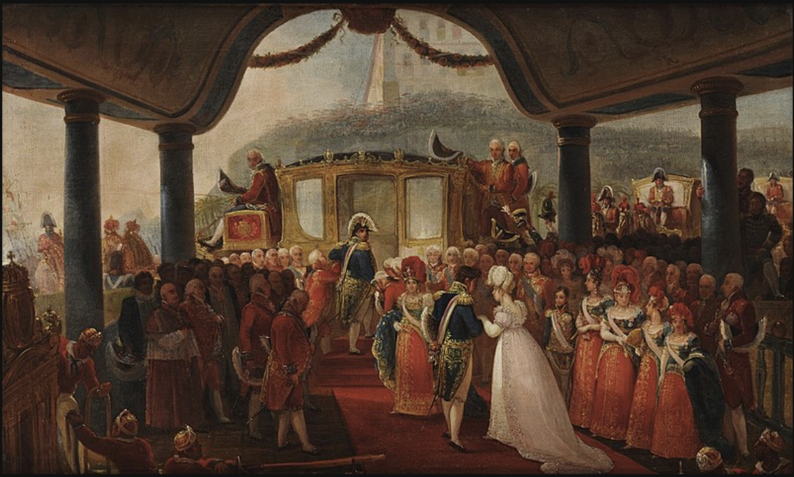
Caption: Jean Baptiste Debret, Landing of the Dona Leopoldina, 1816
Modernismo
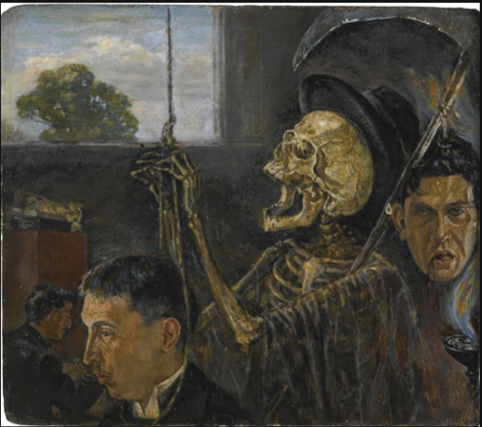
Caption: Julio Ruelas, El Ahorcado(The Hangman),1897
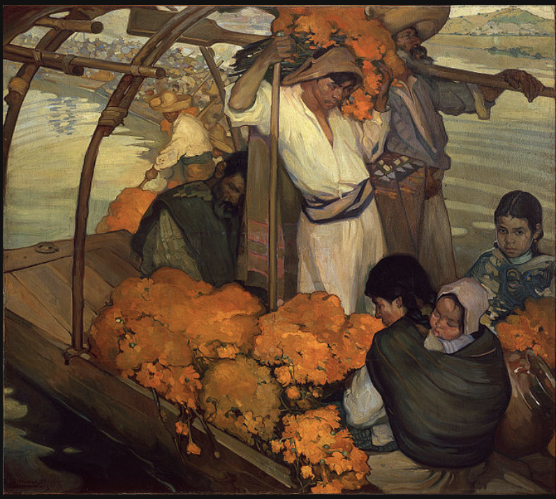
Caption: Saturnino Herran, The Offering, 1913
The Avant-Garde
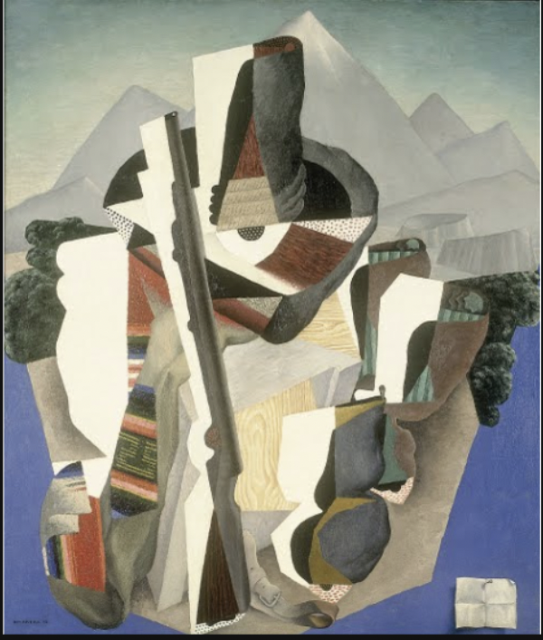
Caption: Diego Rivera, Zapatista Landscape, 1915
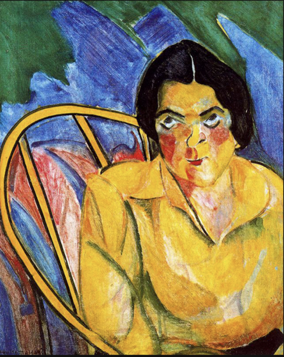
Caption: Anita Malfatti, The Fool, 1915-1916
Social, Ideological, and Nativist Art
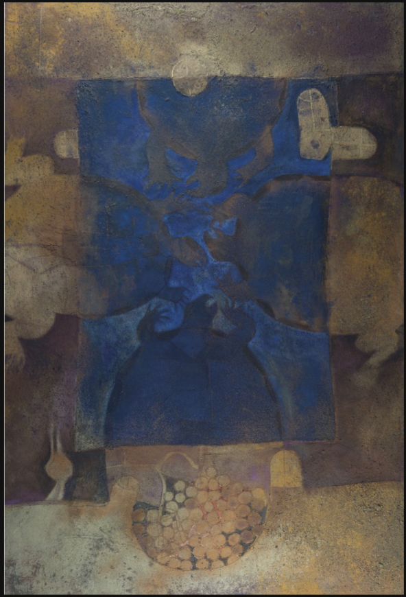
Caption: Orozco, The Struggle of the Occident, 1931
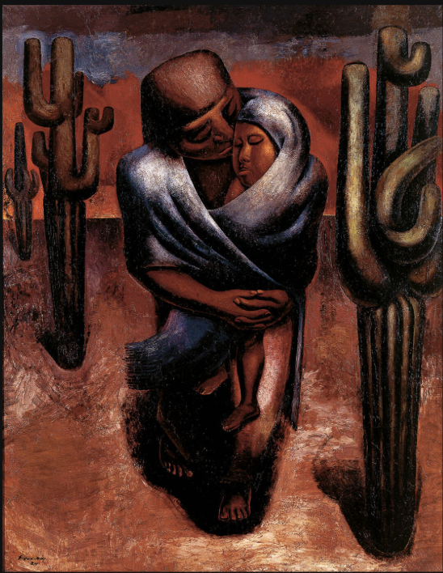
Caption: Siqueiros, Peasant Mother, 1929
Surrealism in Argentina and Mexico
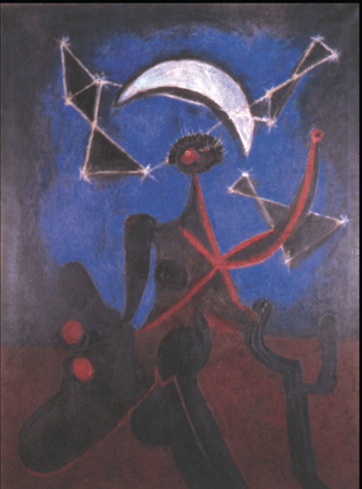
Caption: Rufino Tamayo, Bailarina en la Noche, 1946
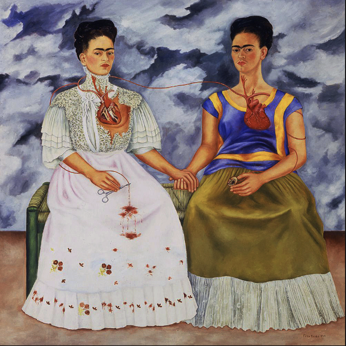
Caption: Frida Kahlo, The Two Fridas, 1939
Surrealism in The Caribbean
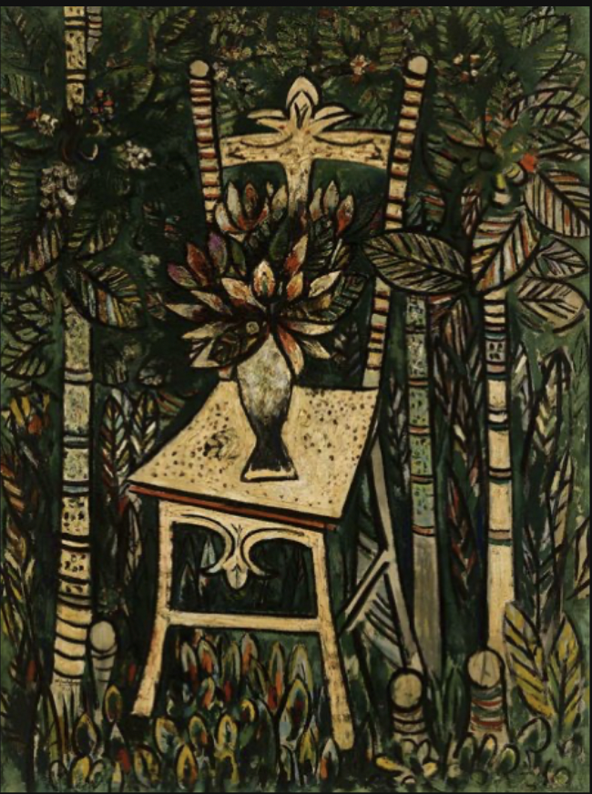
Caption: Wilfredo Lam, The Chair, 1942
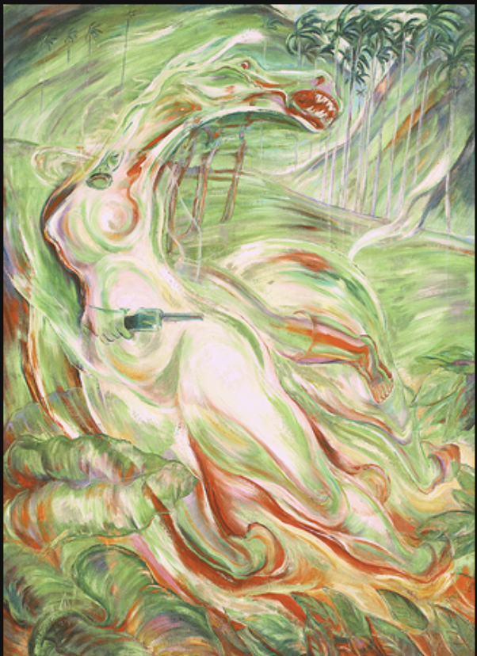
Caption: Carlos Enriquez, Bandolero Criollo, 1943
Abstraction
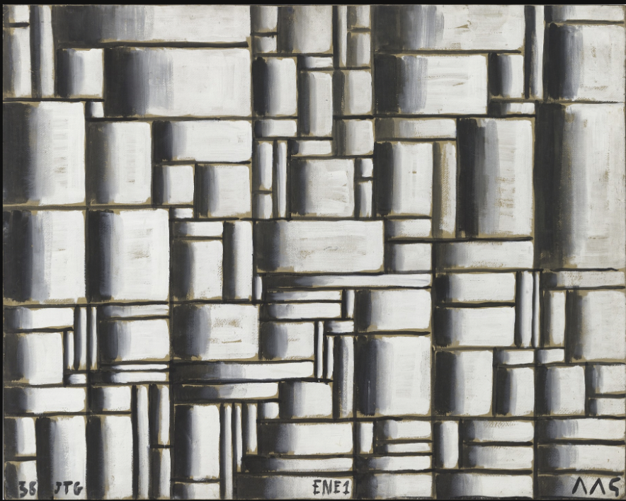
Caption: Torres-Garcia, Construction in White and Black, 1938
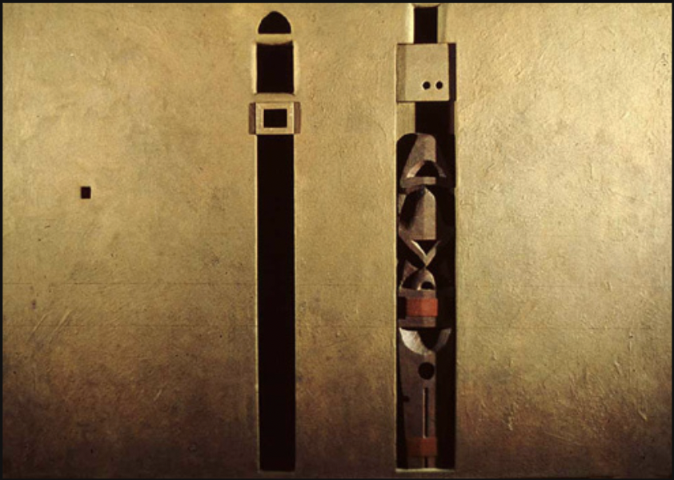
Caption: Marcelo Bonevardi, Private Chamber, 1966
Museums, Biennials and Architecture
Caption: Francisco Toledo, Tortuga poniendo huevos (Turtle Laying Eggs), 1973
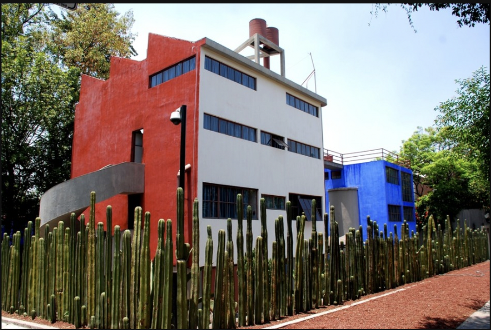
Caption: Juan O’Gorman, Studio for Diego Rivera, 1930
Op-Art and Beyond
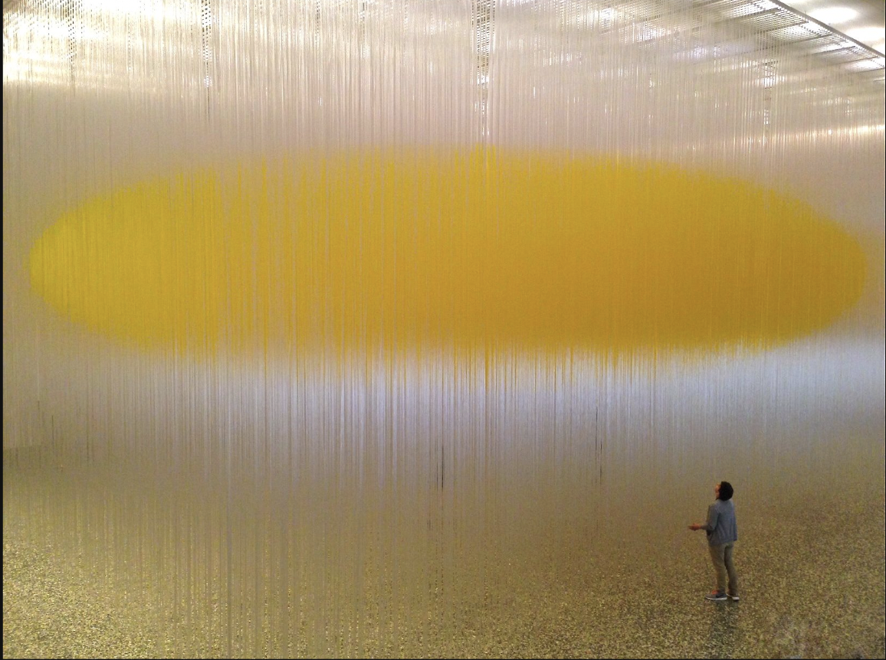
Caption: Jesus Soto, Houston Penetrable, 2004-2014
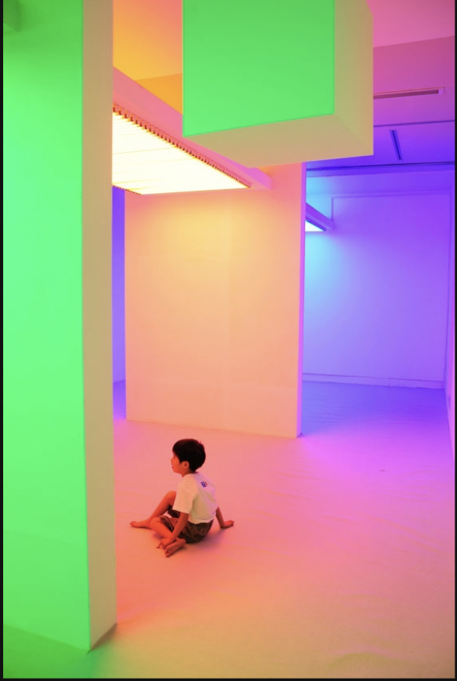
Caption: Chromosaturation, 2010